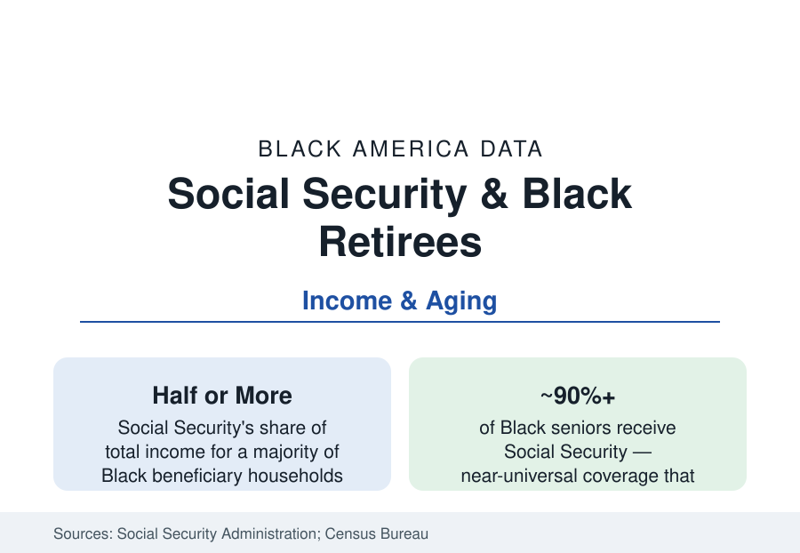

Black Census
Black Retirement: Social Security's Outsized Role
Social Security provides half or more of income for a majority of Black retirees — the retirement system's load-bearing wall. The SSA and Census data.

For Black America, retirement is substantially a public program. The Social Security Administration's income-of-the-aged data show Social Security supplying half or more of total income for a majority of Black beneficiary households — a dependence share well above White retirees' — with pensions, earnings, and assets dividing most of the rest. The program's progressive benefit formula and near-universal coverage make it the single most effective anti-poverty institution in the Black economic data. This article reports the retirement income file.
The Income Stack, Layer by Layer
The SSA's biennial income volumes decompose the aged household's dollar, and the Black stack's shape is the working life's shape compounded. Social Security dominates — the earnings-record-based benefit reflecting a lifetime of the wage data (the covered earnings themselves averaged lower, the formula's progressivity replacing a higher share of them). Employer pensions form the second layer at lower coverage: the public-sector and union workforces carry defined-benefit pensions into retirement (the pension wealth of the wealth profile), while the private 401(k) era's balances — the investment profile's thin medians — generate modest income for the median Black retiree. Earnings continue later into life (Black seniors work at higher rates into their late sixties in the labor data, necessity and the gig economy's older edge). Asset income is the thinnest layer of all — the distribution's signature: the median White retired household draws meaningful dividends, interest, and rent; the median Black retired household's asset income rounds near zero in the SSA tables, so the stack for most Black retirees is two-legged at best — a benefit check and whatever work continues.
The Poverty Prevention Arithmetic
The Census Bureau's poverty measurement makes the counterfactual explicit: elderly poverty without Social Security would run several times its actual rate for all groups, and the program's effect is largest for Black seniors — the official elderly Black poverty rate, in the low-to-mid teens in recent years, sits against a no-benefit counterfactual in the range of half the population in the Census and SSA simulations. The Supplemental Poverty Measure (counting medical costs and near-cash benefits) raises elderly poverty for everyone and preserves the ordering. The program's family structure matters demographically: survivor and dependent benefits flow disproportionately to Black widows and children in the SSA data (the mortality data's earlier deaths converting retirement insurance into family insurance), and disability benefits (the disability profile) bridge the pre-65 years for a large share of the population that reaches retirement age already on the rolls.
Claiming Ages and the Longevity Equation
The claiming data record a consequential pattern: Black beneficiaries claim retirement benefits at 62 — the earliest, permanently reduced age — at the highest rates of any group in the SSA statistics, driven by the labor data's realities (physically demanding work's toll, job loss in the late fifties, health exits) and by shorter life expectancy's cruel arithmetic (the expected-lifetime calculus that makes early claiming rational against the mortality tables, even as it locks in lower monthly income for the long-lived). The longevity distribution's width is the file's nuance: Black life expectancy at 65, conditional on reaching it, narrows the gap considerably — the survivors' cohort lives long enough that the reduced benefits compound into the oldest-old poverty the seniors profile records, concentrated among Black women living alone in their eighties on a widow's benefit.
The Coming Wave: The 401(k) Generation Retires
The system's near future is visible in the near-retiree data: the cohorts now in their fifties are the first whose private retirement ran mainly through 401(k)s rather than pensions, and their Black balances (the wealth profile's midlife medians) imply a retirement stack even more Social-Security-dominant than their parents' — with the public-sector pensioned cohort the exception that will shrink as a share. The policy files (auto-enrollment state programs like the 'auto-IRA' systems several states now run, whose participant data skew heavily toward Black and Latino workers previously uncovered; the federal proposals' scoring) are aimed at exactly this cohort's coverage hole. The housing asset completes the picture: for the median Black retiring household, the paid-off house (the homeownership profile) is the balance sheet — which is why the reverse-mortgage, property-tax, and heirs'-property files are, functionally, retirement policy.
Reading the Retirement Data
Strip the retirement system to its studs and the Black data show one load-bearing wall: a public, progressive, near-universal program doing the work that private wealth does elsewhere. Every debate about that program's future is therefore, in the Black numbers, a debate about the entire retirement edifice — the seniors' poverty rate is the formula's output, and the formula is the file.
More in Black Census
The Black Population of the United States: Size, Definitions, and Distribution
The Black population of the United States totals 52.8 million — 15.4 percent of the nation. How the Census Bureau defines and counts the population, and where it lives.
Black Median Household Income in the United States
Black median household income stands at $56,490 in the Census Bureau's annual income report — how the figure is measured, how it compares, and what drives it.
The Black Poverty Rate: Levels, Children, and the Long Trend
The official Black poverty rate is 17.1 percent — against 11.1 percent nationally and 7.7 percent for non-Hispanic White Americans. How poverty is measured and what the data show.
Source: Social Security Administration, Income of the Population 55 or Older; U.S. Census Bureau, American Community Survey; Employee Benefit Research Institute retirement surveys.